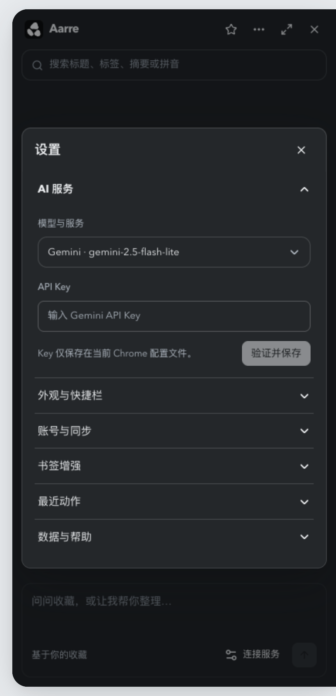
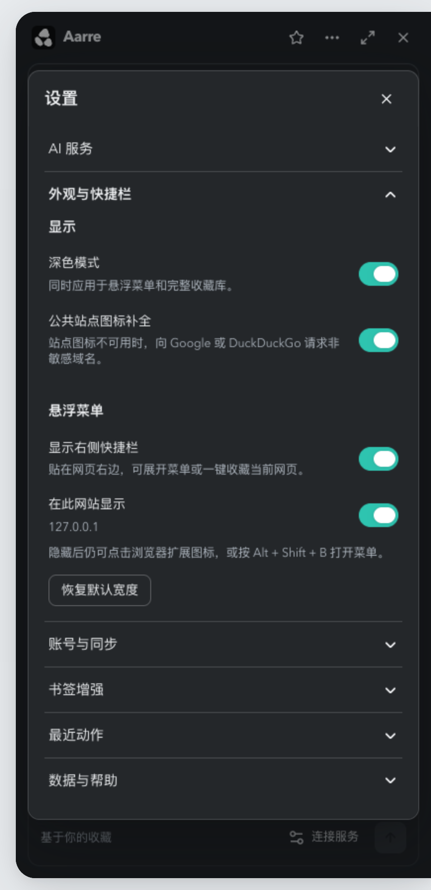
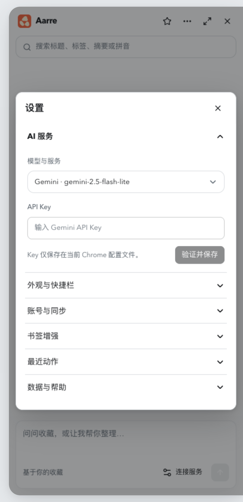
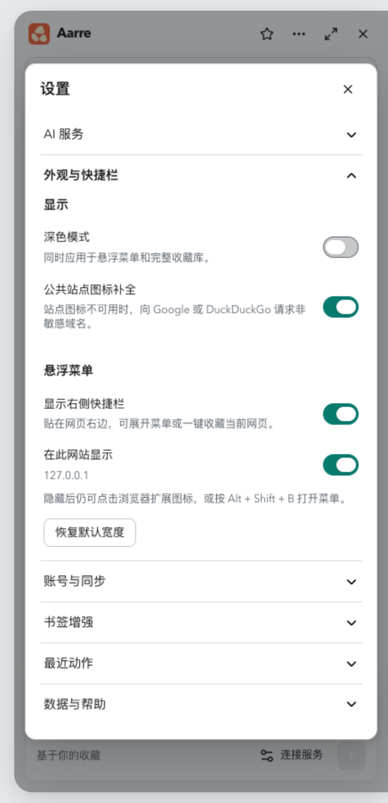
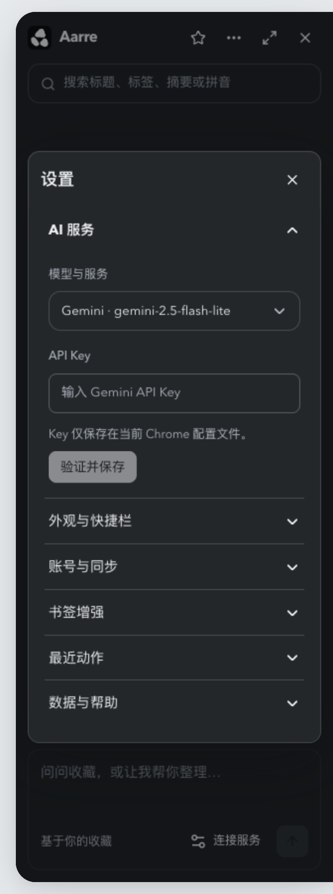
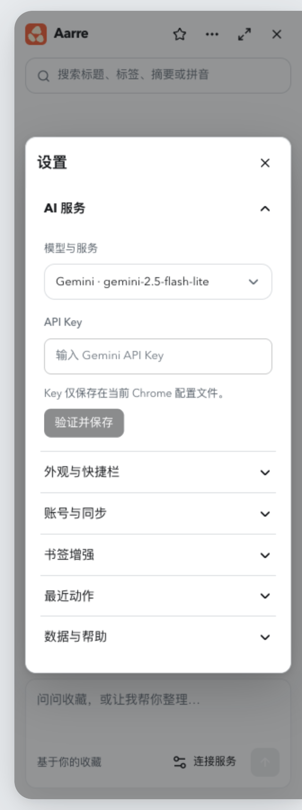
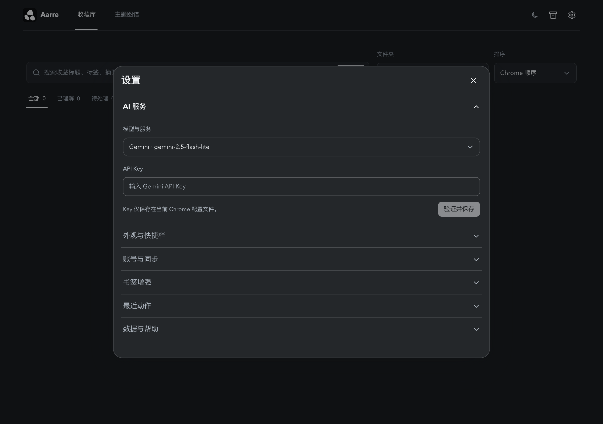

六个设置分类纵向排列，内容在标题下方展开。点击另一个分类时，当前分类自动收起；未保存的输入保留。侧边菜单与完整收藏库使用相同的抽屉结构，延续统一的深浅色浮层规范。

内容紧跟标题展开，其余五项合并为标题行。

切换后 AI 服务自动收起，保留通用浮层层次。

统一纵向抽屉，标题行始终保留。

在对应标题下查看和操作真实设置。

保持纵向排列与完整内容。

六个分类都能展开、收起。

与侧边设置共用同一套抽屉交互。